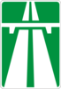
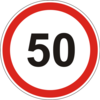
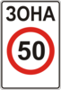

12. Скорость движения
- а) автобусам (микроавтобусам), осуществляющим перевозку организованных групп детей, легковым автомобилям с прицепом и мотоциклам – не более 80 км/ч;
- б) транспортным средствам, которыми управляют водители со стажем до 2 лет, – не более 70 км/ч;
- в) грузовым автомобилям, перевозящим людей в кузове, и мопедам – не более 60 км/ч;
- г) автобусам (за исключением микроавтобусов) – не более 90 км/ч;
- ґ) прочим транспортным средствам: на автомобильной дороге, обозначенной дорожным знаком  5.1, – не более 130 км/ч, на автомобильной дороге с отдельными проезжими частями, отделенными одна от другой разделительной полосой, – не более 110 км/ч, на прочих автомобильных дорогах – не более 90 км/ч.
- а) превышать максимальную скорость, определенную технической характеристикой данного транспортного средства;
- б) превышать максимальную скорость, указанную в пунктах 12.4 - 12.7, на участке дороги, где установлены дорожные знаки  3.29,  3.31, или на транспортном средстве, на котором установлен опознавательный знак в соответствии с подпунктом «и» пункта 30.3 данных Правил;
- в) препятствовать другим транспортным средствам двигаясь без надобности с очень малой скоростью;
- г) резко тормозить (кроме случаев, когда без этого невозможно предотвратить дорожно-транспортное происшествие);
При этом вместе со знаками ограничения скорости движения 3.29 и(или) 3.31 обязательно дополнительно устанавливаются соответствующие дорожные знаки, которые предупреждают о характере опасности и(или) приближении к соответствующему объекту.
В случае когда дорожные знаки ограничения скорости движения 3.29 и(или) 3.31 установлены с нарушением определенных этими Правилами требований относительно их введения или с нарушением требований национальных стандартов или оставлены после устранения обстоятельств, при которых они были установлены, водитель не может быть привлечен к ответственности в соответствии с законодательством за превышение установленных ограничений скорости движения.
- а) в местах выполнения дорожных работ;
- б) в местах проведения массовых или специальных мероприятий;
- в) в случаях, связанных со стихийными (погодными) явлениями.
- а) на опасных участках дорог и улиц (опасные повороты, участки с ограниченной видимостью, места сужения дороги и т. п.);
- б) в местах размещения наземных нерегулируемых пешеходных переходов;
- в) в местах расположения стационарных постов Госавтоинспекции;
- г) на участках дорог (улиц), прилегающих к территории дошкольных и общеобразовательных учебных заведений, детских оздоровительных лагерей.